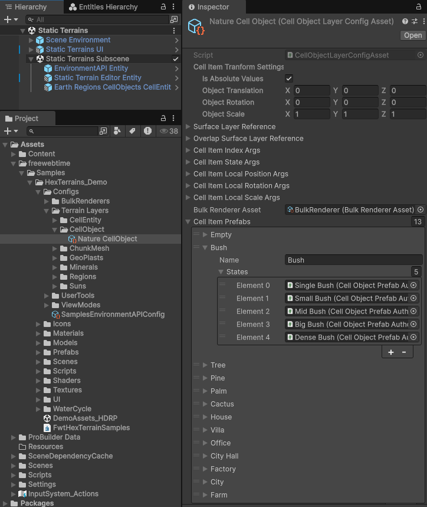
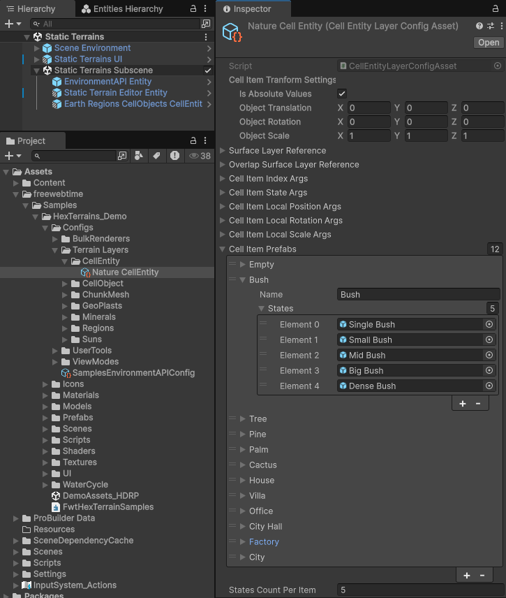

CellItemLayerConfigAsset (and derived layer config assets)
Cell Objects:

Cell Entities:

CellItemLayerConfigAsset<TLayer> is the common base ScriptableObject config for all “cell item” style layers: layers that store one item per cell plus per-cell transform components (position/rotation/scale) that can later be used to spawn entities or render instanced meshes.
It plays two roles:
Layer factory
InheritsHexTerrainLayerConfigAsset<TLayer>which implementsITerrainLayerFactory, soHexTerrainLayerGroup<T>can callCreateTerrainLayer()on the asset to instantiate the correct runtime layer.Initialization payload
ImplementsICellItemLayerConfig, whichCellItemLayer.Init(settings, initArgs)reads to initialize all the internal data layers.
Source:
com.freewebtime.hexterrains/Runtime/CellItems/Data/CellItemLayerConfigAsset.cs
How this config is used during terrain initialization
A typical terrain setup uses HexTerrainLayerGroup<TLayer> and passes a list of config assets as init args. During initialization:
HexTerrainLayerGroup<T>.CreateTerrainLayer(initArgs)detectsinitArgs is ITerrainLayerFactoryand creates the runtime layer viaCreateTerrainLayer().- Then
layer.Init(settings, initArgs)is called. CellItemLayer.Init<TInitArgs>checksinitArgs is ICellItemLayerConfigand:- copies references/settings into the layer
- initializes cell-value data layers (
ItemIndexMap,ItemStateMap,ItemPositionMap,ItemRotationMap,ItemScaleMap)
flowchart TD
A["Init args list contains cell-item config assets"] --> B["HexTerrainLayerGroup<T>.InitLayers(...)"]
B --> C["CreateTerrainLayer(initArgs) uses ITerrainLayerFactory"]
C --> D["Runtime layer created (CellItemLayer / CellEntityLayer / CellObjectLayer)"]
D --> E["layer.Init(settings, initArgs)"]
E --> F["CellItemLayer.Init<T> reads ICellItemLayerConfig and initializes maps"]
E --> G["Derived layers read their extra config (ICellEntityLayerConfig / ICellObjectLayerConfig)"]
Base config: CellItemLayerConfigAsset<TLayer>
This base class defines the shared fields used by all cell-item layers.
1) _cellItemTranformSettings / CellItemTransformSettings
Type: CellItemTransformSettingsEditor (serialized) → implicitly converts to CellItemTransformSettings
Meaning:
- Layer-wide transform settings applied during transform calculation (in addition to per-cell local position/rotation/scale maps).
Where it’s used:
- Copied in
CellItemLayer.Init<T>:ItemTransformSettings = config.CellItemTransformSettings
- Consumed by
CellItemLayer.UpdateLocalTransforms()→ schedulesCalculateCellItemTransformsJobusing:TransformSettings = ItemTransformSettings
Notes on CellItemTransformSettingsEditor fields (what you see in the Inspector):
IsAbsoluteValues,ObjectTranslation,ObjectRotation,ObjectScale: author the base transform.IsAutoRotation,RotationY,OffsetFromCenter: optional editor helpers for computing rotation/offset.- Produces
CellItemTransformSettings.Transform(a matrix), cached into position/rotation/scale inCellItemTransformSettings.
2) _surfaceLayerReference / SurfaceLayerReference
Type: HexTerrainLayerReference
Meaning:
- Which surface layer (usually a
ChunkMeshLayer) the cell items should treat as “ground” for placement.
Where it’s used:
- Copied in
CellItemLayer.Init<T>:SurfaceLayerReference = config.SurfaceLayerReference
- Used later by
CellObjectLayer.CalculateCellObjects(...)to resolve:surfaceLayer = chunkMeshes.GetLayer<ChunkMeshLayer>(SurfaceLayerReference)
3) _overlapSurfaceLayerReference / OverlapSurfaceLayerReference
Type: HexTerrainLayerReference
Meaning:
- Optional “overlap” surface. If set, placement logic can choose whichever surface is higher at a given cell. The cell item will be placed on the “overlap” surface if it’s higher than the main
SurfaceLayerReferencesurface.
Where it’s used:
- Copied in
CellItemLayer.Init<T>:OverlapSurfaceLayerReference = config.OverlapSurfaceLayerReference
- Used later by
CellObjectLayer.CalculateCellObjects(...)to resolve:overlapSurfaceLayer = chunkMeshes.GetLayer<ChunkMeshLayer>(OverlapSurfaceLayerReference)
- Affects which job variant is scheduled:
CalcCellObjectsLODLayerJob(no overlap)CalcCellObjectsLODLayerJob_OverlapSurface(with overlap)
4) _cellItemIndexArgs / CellItemIndexArgs
Type: InitColorMapCellValueDataLayerArgs<int>
Meaning:
- Initialization rules for
CellItemLayer.ItemIndexMap(per-cell item index).
Where it’s used:
CellItemLayer.Init<T>calls:InitColoredDataLayer(ItemIndexMap, config.CellItemIndexArgs)
Implications:
- This is the primary “what item is in the cell” value.
- It also drives
ItemIndexMap’s color map (palette-based), which is used by some layers (notablyCellObjectLayerandCellEntityLayer) for visualization/minimap/debug coloring.
5) _cellItemStateArgs / CellItemStateArgs
Type: InitCellValueDataLayerArgs<int>
Meaning:
- Initialization rules for
ItemStateMap(per-cell item state/variant).
Where it’s used:
CellItemLayer.Init<T>calls:InitDataLayer(ItemStateMap, config.CellItemStateArgs)
Implications:
- State is typically interpreted by derived layers to pick visuals or prefab variants.
6) _cellItemLocalPositionArgs / CellItemLocalPositionArgs
Type: InitCellValueDataLayerArgs<float3>
Used by:
CellItemLayer.Init<T>→InitDataLayer(ItemPositionMap, config.CellItemLocalPositionArgs)
Meaning:
- Per-cell local translation relative to the cell’s placement reference.
7) _cellItemLocalRotationArgs / CellItemLocalRotationArgs
Type: InitCellValueDataLayerArgs<quaternion>
Used by:
CellItemLayer.Init<T>→InitDataLayer(ItemRotationMap, config.CellItemLocalRotationArgs)
Meaning:
- Per-cell local rotation.
8) _cellItemLocalScaleArgs / CellItemLocalScaleArgs
Type: InitCellValueDataLayerArgs<float3>
Used by:
CellItemLayer.Init<T>→InitDataLayer(ItemScaleMap, config.CellItemLocalScaleArgs)
Meaning:
- Per-cell local scale.
How the above maps affect CellItemLayer initialization
CellItemLayer.Init(settings) always creates/initializes the required data layers (sizes, allocators).
Then CellItemLayer.Init(settings, initArgs) applies your config:
ItemTransformSettings,SurfaceLayerReference,OverlapSurfaceLayerReferenceare stored on the layer.ItemIndexMap,ItemStateMap,ItemPositionMap,ItemRotationMap,ItemScaleMapare initialized/fill-populated based on the args.
ItemTransformMap is not directly initialized by the config. Instead, it’s computed when UpdateLocalTransforms() runs, based on:
ItemPositionMap+ItemRotationMap+ItemScaleMap- and
ItemTransformSettings(from the config)
Derived config assets (inherited from CellItemLayerConfigAsset<TLayer>)
CellEntityLayerConfigAsset
Source:
com.freewebtime.hexterrains/Runtime/CellEntities/Data/CellEntityLayerConfigAsset.cs
Factory mapping:
CellEntityLayerConfigAsset.CreateTerrainLayer()→new CellEntityLayer()
Additional fields:
_cellEntities / CellEntities
Type: List<CellEntityConfigAuthoring>
Meaning:
- Editor/baking-time authoring list for entity-prefab-backed cell items.
How it’s used:
- Not consumed directly by
CellEntityLayer.Init(settings, initArgs)at runtime. - Typically baked into a combined
DynamicBuffer<CellEntityConfig>on the terrain entity (the runtime code consumes the baked configs via the range fields below).
_entityConfigsRangeStart / EntityConfigsRangeStart
Type: int
Meaning:
- Start index into the combined baked entity-config buffer (shared across layers).
Where it’s used during initialization:
- In
CellEntityLayer.Init(settings, ICellEntityLayerConfig args, NativeArray<CellEntityConfig> cellEntityConfigs):- selects the slice:
GetCellEntityConfigs(cellEntityConfigs, args.EntityConfigsRangeStart, args.EntityConfigsRangeSize) - then calls
InitCellEntitiesConfigs(slice)
- selects the slice:
_entityConfigsRangeSize / EntityConfigsRangeSize
Type: int
Meaning:
- Size of the slice belonging to this layer in the combined baked buffer.
Where it’s used:
- Same place as
EntityConfigsRangeStart(slice length).
What InitCellEntitiesConfigs(...) does with the slice
During initialization it:
- copies configs into
CellEntityLayer.CellEntityConfigs(NativeList<CellEntityConfig>) - builds a color palette from
CellEntityConfig.Color - initializes
ItemIndexMap’s palette with those colors:ItemIndexMap.InitColorPalette(colorPalette)
Why it matters:
ItemIndexMapvalues are treated as indices intoCellEntityConfigs.- The palette allows consistent visualization of “which entity index is in this cell”.
CellObjectLayerConfigAsset
Source:
com.freewebtime.hexterrains/Runtime/CellObjects/Data/CellObjectLayerConfigAsset.cs
Factory mapping:
CellObjectLayerConfigAsset.CreateTerrainLayer()→new CellObjectLayer()
This asset contains both:
- runtime-used fields (renderer + baked visuals + LOD settings), and
- editor/baking inputs (authoring objects, bake helpers).
Additional fields and how they participate in CellObjectLayer initialization:
_bulkRendererAsset / BulkRenderer
Type: BulkRendererAsset (serialized), exposed as IBulkRenderer
Where it’s used during initialization:
- In
CellObjectLayer.Init<T>:BulkRenderer = args.BulkRenderer
Used later during rendering:
CellObjectLayer.Render(...)usesBulkRenderer.RenderEntities(...).
_useLODSettings / UseLODSettings
Type: bool
Meaning:
- Whether this layer should use the layer-wide LOD ranges derived from
_LODDistances/_LODSettings.
Where it’s used:
- Primarily affects editor-side baking (
BakeLODSettings) and the getterGetObjectsLODSettings(). - Runtime consumes the resulting
LODSettingslist (below).
_LODDistances / LODDistances
Type: List<float>
Meaning:
- Editor-friendly input for LOD band distances (each entry becomes a max distance for a LOD band).
Used by:
BakeLODSettings()to produce_LODSettings.
_LODSettings / LODSettings
Type: List<CellObjectLayerLODSettings>
Where it’s used during initialization:
- In
CellObjectLayer.Init<T>wheninitArgs is ICellObjectLayerConfig:- copies list into
CellObjectLayer.LODSettings(native list) - sets
CellObjectLayer.LODsCount = args.LODsCount
- copies list into
Also used later:
RenderLODs(...)selects which LOD layer to render based on camera zoom andLODSettings.
Baked data fields (_bakedObjectConfigs, _bakedObjectStateConfigs, _bakedVisualItemSettings, _bakedStatesLODSettings, _colorPalette)
Types:
List<CellObjectConfig>(BakedObjectConfigs)List<CellObjectStateConfig>(BakedObjectStateConfigs)List<CellObjectVisualItemSettings>(BakedVisualItemSettings)List<CellObjectLODSettings>(BakedStatesLODSettings)List<Color32>(ColorPalette)
Meaning:
- These represent the precomputed runtime-ready data used by jobs that compute per-cell render items.
Where they’re used during initialization:
- In
CellObjectLayer.Init<T>:- calls
InitVisuals(...)using:args.GetCellObjectConfigs()(usuallyBakedObjectConfigs)args.GetCellObjectStateConfigs()args.GetColorPalette()(used to setItemIndexMap.ColorMappalette)args.GetVisualItemSettings()(usuallyBakedVisualItemSettings)args.GetObjectStatesLODSettings()(usuallyBakedStatesLODSettings)
- calls
Key effect:
- Populates
CellObjectLayer.AllCellObjectVisualsandCellObjectLayer.AllCellObjectsLODSettings - Updates the
ItemIndexMapcolor palette viaUpdateColorPalette(copyColorPaletteFrom)
_statesCountPerObject / StatesCountPerObject
Type: int
Meaning:
- Defines how
ItemStateMapvalues map into baked state data. - Common pattern:
globalStateIndex = (objectIndex * StatesCountPerObject) + stateIndex.
Where it’s used during initialization:
- In
CellObjectLayer.Init<T>:StatesCountPerObject = args.StatesCountPerObject
Where it’s used later:
- Passed into
CalcCellObjectsLODLayerJob*asStatesCountPerObject.
_maxSubmeshesPerCell / MaxSubmeshesPerCell
Type: int
Meaning:
- Upper bound for how many render sub-items a single cell object can emit (capacity planning).
Where it’s used during initialization:
- In
CellObjectLayer.Init<T>:MaxSubmeshesPerCell = args.MaxSubmeshesPerCell
- Then
InitRenderEntitiesLODs()allocates/initializes eachBulkRenderItemsDataLayerwith:Settings.CellsCount * MaxSubmeshesPerCell
Impact:
- Directly affects memory/capacity of the per-LOD render-items buffers.
Summary: which runtime layer each config asset creates
| Config asset | Runtime layer created by CreateTerrainLayer() |
|---|---|
CellEntityLayerConfigAsset |
CellEntityLayer |
CellObjectLayerConfigAsset |
CellObjectLayer |
Both inherit the shared initialization behavior from CellItemLayerConfigAsset<TLayer> via CellItemLayer.Init(settings, initArgs).
Appendix: shared init-args structs used by this config
InitCellValueDataLayerArgs<T>
Used by: state, local position, local rotation, local scale
Key fields:
DefaultValue(used when resizing layers)IsFillWithValue+FillValueIsFillWithRandomValues+RandomMinValue+RandomMaxValueIsApplySourceTexture+SourceTexture+SourceTextureValueOffset+SourceTextureValueScale
InitColorMapCellValueDataLayerArgs<T>
Used by: CellItemIndexArgs (index map + palette + optional auto-color mode)
Adds:
ColorPaletteAutoColorMapMode- plus
MinValue/MaxValueused by some color mapping modes